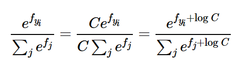
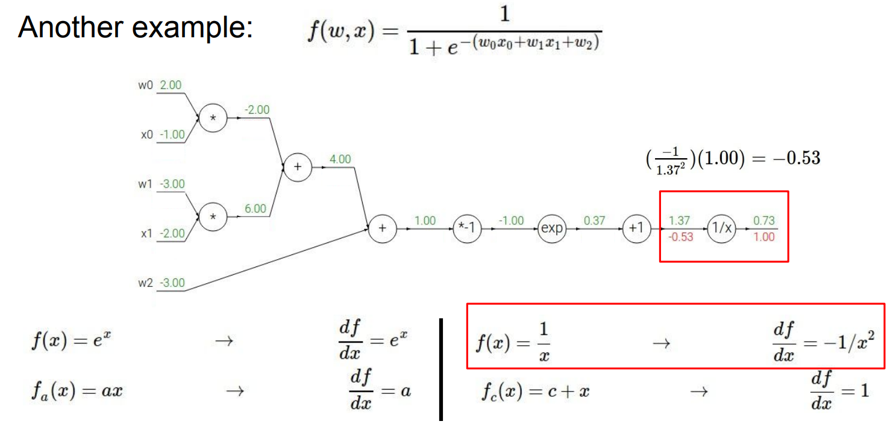
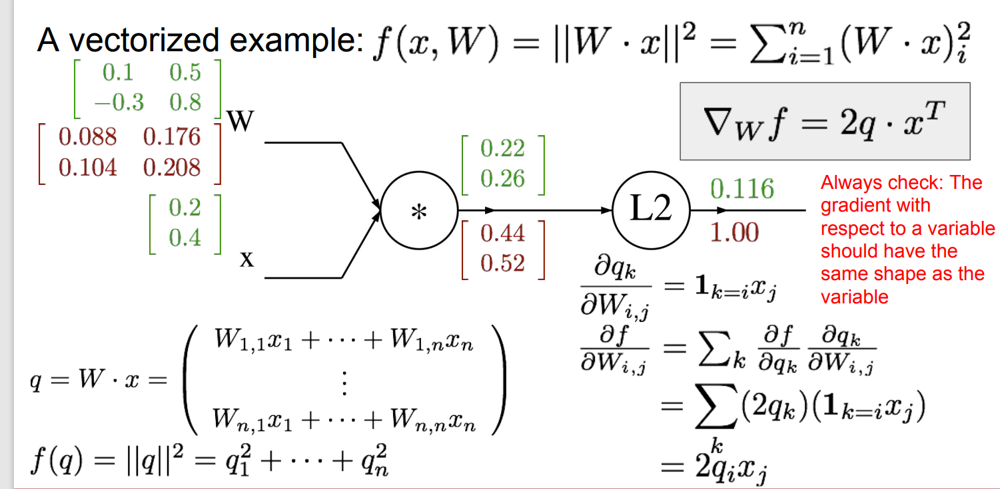

CS231n-assignment1部分笔记
Overview
聚焦于图像分类，目标检测等
python常见的矩阵操作(针对np.array)
矩阵索引：
1 | A[[0,1],[0,1]]-->相当于[A[0][0],A[1][1]],注意不能写成A[[0,1]][[0,1]] |
常用矩阵操作：
1 | np.argsort(a) #-->得到数组a的从小到大排序的下标 |
图像分类
鲁棒性：illumination，deformation，occlusion(遮挡)，background clutter(背景混乱)，intraclass variation(类内差异)
数据驱动——例如要辨别猫，就收集许多猫的图片训练网络识别
最simple的分类器：K Nearest Neighbor
- train: 记忆所有的data和对应的label
- predict: 根据最接近的training image进行标签预测
- 训练时间:O(1)
- 预测时间:O(N)
- bad——我们希望预测时间少，而训练时间可以相对多一些；维度灾难（KNN需要训练集稠密，所以需要的训练数据随维度而指数增加）
- 超参数： K，距离函数
- 错误做法：
- 只分训练集，选择训练集表现最好的超参数（过拟合，例如K=1）
- 分训练集和测试集，选择测试集表现最好的超参数（有偶然性）
- 分训练集，验证集，测试集：训练集训练，验证集评估，选择验证集表现最好的超参数，并且在测试集上测试。
CIFAR 10：10个类，五万张训练，一万张测试
- k折交叉验证（小数据集中常用）
- 数据集分训练-验证-测试，把训练集分成n部分，每次取一部分作为验证集，剩下n-1部分作为训练集；测试集在每个folds上不变
距离函数
L1距离 边界倾向于平行坐标轴
使用L1/L2距离函数衡量图像是否相似是不合适的
线性回归
从线性回归到神经网络——
开发一种新的分类方式：包含score function 和 loss function. （将原始数据映射到类别分数的分数函数，以及量化预测分数和地面实况标签之间一致性的损失函数）然后我们将把它转化为一个优化问题，我们将最小化关于得分函数参数的损失函数。
以CIFAR-10数据集为例，类别有10类，图片为32*32*3=3072个像素，我们可以把图片看做高维空间中的一个点(例如3072维空间中的点) \[ f(x_i, W,b) = Wx_i+b \] \(x_i\) flatten的图片(3072*1)，\(W\) 参数矩阵，也叫weights(10*3072)，\(b\) bias vector(10*1)
对W的解释：
- W代表图片像素的“权重”，例如属于ship的图的蓝色通道的权重可能会大，因为轮船通常与水相关
- W代表一种类别的template(模板)，\(Wx_i\)相当于图片与模板做点乘，分数越大说明图片和这个类别的模板越匹配；线性回归也是一种“template matching”.
单纯可视化模板：
训练技巧：把x拓展一维，变成3073*1，拓展出的那一维始终为1，而W拓展一维，拓展出的那一维就是b
数据预处理：把图像空间从[0,255]压缩到[-1,1]
SVM loss
SVM loss = Data loss + Regularization loss
Data loss
我们假设s是评估函数\(f(x_i,W)\)的结果，\(s_1,...,s_j,...s_{10}\)对应第1,...,j,...10个类的评分（分数越大，越接近该类）
SVM“希望”每个图像的正确类别的分数比不正确的类别高一些固定的边际值\(\Delta\) ，如果高于\(\Delta\)，则损失记为0，如下：
设\(s_{y_i}\)为第i个图像的正确类别，\(L_i\)为第i张图的损失，data loss = \(\frac 1n \sum_{i=1}^n L_i\) \[ L_i = \sum_{j\neq y_i}\max(0,s_j - s_{y_i} + \Delta) \] \(\max(0,-)\)的形式的损失又被称为 hinge loss ; squared hinge loss(L2-SVM) ：\(\max(0,-)^2\)
Regularization loss
可能存在许多不同的W，都满足data loss 最小。
此时加入正则化项：正则化损失是W中每个元素的平方和(×λ)。（L2-Regularization）
" L2 penalty prefers smaller and more diffuse weight vectors"——有利于考虑更多的dimension，减少过拟合。
Softmax loss
指数处理+归一化 \[ f_i = f(x_i,W)[i](第i个类别的分数),\,L_i = -\log \frac{e^{f_{y_i}}}{\sum_j e^{f_j}} \]
不同观点下的Softmax loss
- 信息论角度
- ground truth 分布p和估计的分布q 的互信息：\(H(p,q) = -\sum_x p(x)\log q(x) = H(p) + D_{KL}(p||q)\)
- 最小化交叉熵就是最小化KL散度
- 概率论角度
- 最大似然估计
实际应用中的数据处理
1 | f = np.array([123, 456, 789]) # example with 3 classes and each having large scores |
防止数据溢出，先减去最大值，再处理，不会影响最后结果。

Optimization
单纯的numerical gradient计算：
h是一个非常小的数，用\([f(x+h) - f(x-h)] / 2h\) 效果更好。
sigmod函数的导数：\(f(x)(1-f(x))\)
梯度图：

可以据此计算反向传播的梯度
一个节点有多个上游分支时，该节点的梯度是所有上游分支回传的梯度之和。
常用gate：
- add gate：gradient distributor（梯度值不变，向两边同时传播）
- max gate：gradient router（只有最大的那条边上有梯度，剩下的边梯度变为0）
- mul gate：gradient switcher（x*y，则传过来的梯度在y的边上乘x，在x的边上乘y）
向量/矩阵求导
\[ 以f(x;W) = ||Wx||^2为例,设q = Wx \]

列向量对列向量求导
\(\vec y = W \vec x\) 其中y是size为C的列向量，x是size为D的列向量，则y对x求导得到的是C*D的矩阵，矩阵的第i行是\(y_i\)对\(x_1,...,x_D\)的导数。这样就把向量求导换成了标量求导。
例如： \[ \frac{\part y_2}{\part x_5} = \frac{\part(W_{21}x_1+W_{22}x_2+...+W_{2D}x_D)}{x_5} = W_{25},推广有:\frac{\part{y_i}}{\part{x_j}} = W_{i,j}\\ 所以\frac{\part \vec y}{\part \vec x} = W \] 把\(y_i\)对\(\vec x\)求导的结果按列排列，得到以下矩阵（就是W）：

行向量对行向量求导
\(\vec y = \vec x W\), y是size=C的行向量，x是size=D的行向量，W是D*C的矩阵，同样先看标量求导是什么： \[ \frac{\part y_2}{\part x_5} = \frac{\part \sum_{i=1}^Dx_i W_{i,2}}{\part x_5} = W_{5,2},推广有:\frac{\part{y_i}}{\part{x_j}} = W_{j,i}\\ \\y为行向量，把y_i对\vec x求导的结果按行排列:(以2*2为例)\\ \left [ \begin{matrix} \frac{\part y_1}{\part x_1} & \frac{\part y_2}{\part x_1}\\ \frac{\part y_1}{\part x_2} & \frac{\part y_2}{\part x_2} \end{matrix}\right] = \left [ \begin{matrix} W_{11} & W_{12}\\ W_{21} & W_{22} \end{matrix}\right] = W \]
列向量对矩阵求导
本来y对W求导是一个三维的，但是里面包含许多0，实际我们可以用二维矩阵代替： \[ \frac{\part y_k}{\part W_{i,j}} = x_j \,\mathbf{if}\,\,i=k \,\mathbf{else}\, \,0 \] 所以我们只需保留\(\part y_1/\part W_{1j},\part y_2/ \part W_{2j},...\)
因为y是一个列向量，我们把\(\part y_i /\part W_{ij}(j=1,2,...,D)\)按列排列，即作为矩阵的每一行，最后得到结果为： \[ \left [ \begin{matrix} x^T\\ x^T \\ ... \\ x^T \end{matrix}\right], x^T是是1*D的行向量，整个矩阵一共有C行 \]
softmax loss 和 hinge loss的导数
对下式求导：
这里\(w^T_j\) 是W的第j列的转置，也就是1*D，\(x_i\) 是D*1的列向量
\(w_j^Tx_i - w_{y_i}^Tx_i + \Delta >0\)时，\(L_i\)才和\(w_{y_i}^T,w_j^T\)有关系。所以有下式：
括号内表示，记算所有不同于真值标签yi的、data loss>0的标签j的个数。
对SoftmaxLoss（如下）求导：其中i代表第i个样本，yi代表true label，j代表其他所有的label，\(f_j\)代表第i个样本j label的得分。（注意是第i个样本的，不是所有的） \[ L_i = -\log \frac{e^{f_{y_i}}}{\sum_j e^{f_j}} = -{f_{y_i}} + \ln \sum_j e^{f_j} \] \(f(W,x) = XW\) X:(N,D); W:(D,C)，则\(f_j = w_j^Tx_i\)
\[ L_i = -w^T_{y_i}x_i + \ln\left(\sum_j e^{w^T_jx_i}\right)\\ \frac{\part L_i}{\part w_{y_i}} = -x_i + \frac{x_i e^{w^T_{y_i}x_i}}{\sum_j e^{w^T_j x_i}}\\ \frac{\part L_i}{\part w_{j}} = \frac{x_i e^{w^T_{y_i}x_i}}{\sum_j e^{w^T_j x_i}} =\frac{\part L_i}{\part w_{y_i}} + x_i \]
另一种求导方式（忘掉上面所有的东西，从维度上考虑）：
例1：
score = XW + b，其中X,W,b的大小分别为\(N\times D\),\(D\times C\),\(1\times C\) \[ \frac{dL}{dW} = \frac{dL}{d\,score}*\frac{d\,score}{dW},从维度看:\\ dL/dW一定是D*C的(标量对矩阵求导),所以(N*C) * \frac{d\,score}{dW} = D*C\\ 所以, \frac{d\,score}{dW}是D*N的，因为只有(D*N)*(N*C) = D*C \]
\[ 所以,\frac{dL}{dW} = X^T \frac{dL}{d\,score} \]
\[ 同理,\frac{dL}{dX} = N*D = (N*C)(C*D) = \frac{dL}{d \,score} *W^T \]
\[ \frac{dL}{db} = 1*C = (1*N)(N*C) = dscore对第一维求和 \]
(原因：s = xw + b, dL/db本来等于1，但由于是矩阵，应为一个向量，而dL/db = dL/ds * ds/db = dL/ds (如果都是数值)，dL/ds相当于从计算图的下游回传过来的梯度，我们直接把这个梯度矩阵对第一维求和即得到真正的矩阵形式的dL/db )